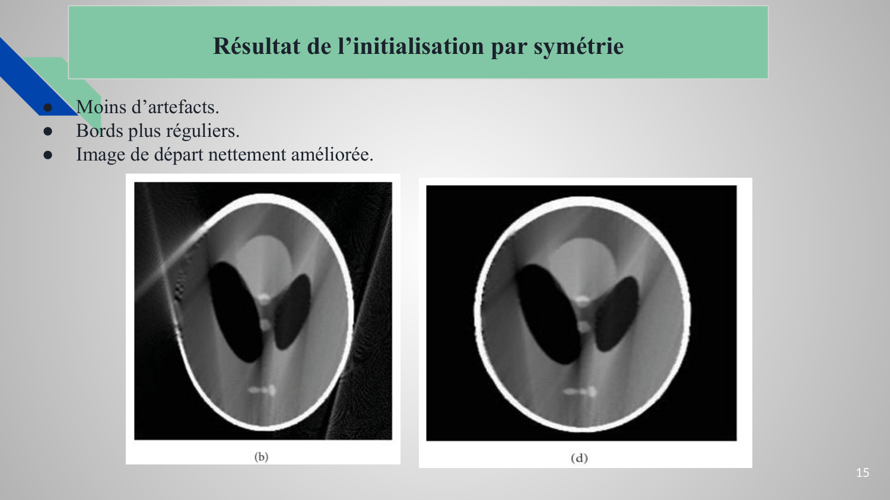

Tomographie
Reconstruction FBP, CS et POCS-TV
Objectif
Reconstruire une image à partir d'un nombre limité de projections et comparer plusieurs méthodes d'inversion.
Méthode
J'ai comparé FBP, Compressed Sensing et POCS-TV sur un scénario à 60 vues. L'évaluation repose sur la MSE et le coefficient de corrélation.
Résultat
Le Compressed Sensing améliore nettement la qualité : MSE ≈ 282,91 contre 1437,92 pour FBP, avec une corrélation ≈ 0,94 contre 0,71.
60 vuesCS : MSE 282,91CS : CC 0,94FBP : CC 0,71
Outils : Python / optimisation